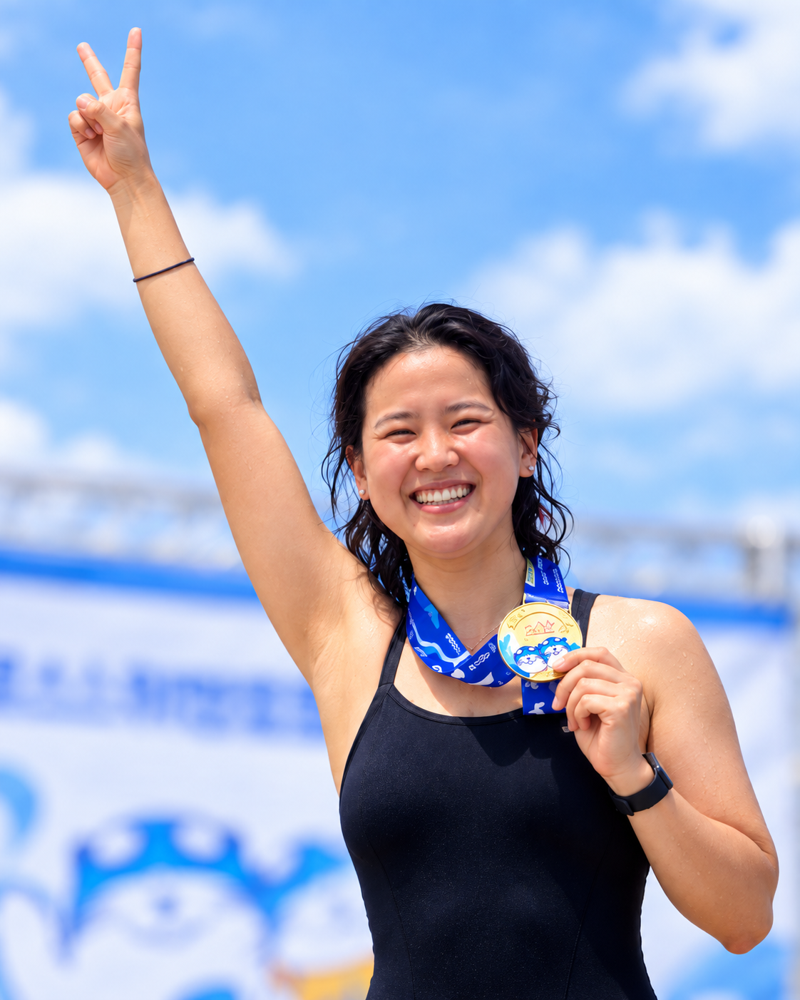

01 / 상세페이지 디자인
닌자 블렌더 상세페이지
블렌더의 강점을 전달하는 상세페이지 작업.
작업 소개 보기
콘텐츠를 기획하고,
영상과 디자인으로 만듭니다.
KEEP MOVING, KEEP EXPLORING, KEEP MAKING
02 / 팀 작업
대표적인 팀 작업 3가지를 소개합니다
03 / 개인 작업
상세페이지, 모션그래픽, 영상, 개인 작업까지.
04 / KIM IN SUK
작은 발견을 기획과 디자인으로 이어가는 일을 좋아합니다.
커피 매장 운영, 비건 밀카페와 장애인 표준사업장 근무,
문화예술 기획 프로젝트 경험을 바탕으로 사람과 일상을 살피며 작업합니다.

연락처